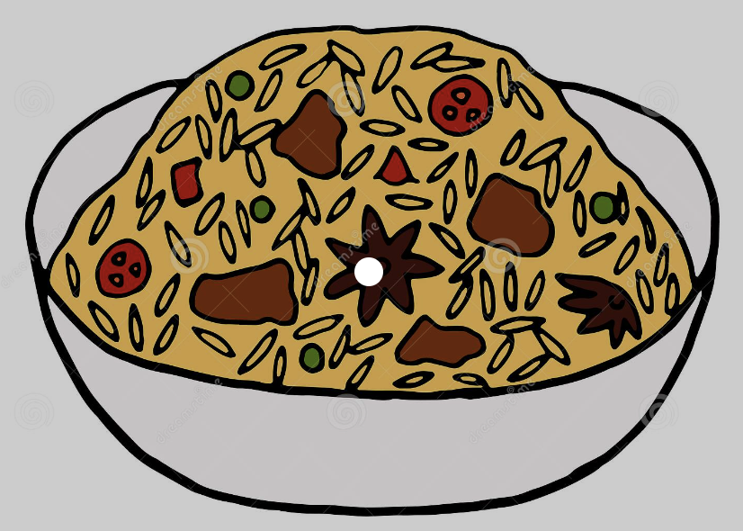

Ultimate Nasi Briyani

Ingredients
- Basmati rice
- Beef cubes - 500 g
- Briyani Spice Mix
- 1 table spoon of raisins and cashews
Directions
- cook the Beef cubes in the pressure cooker for 35minutes
- Add the rice and spices and cook in the pressure cooker for 10 minutes
- Top the end product with cashews and raisins and serve